apps, tools & experiments. cameras, image processors, editors and a few other things.
14 projects / 0 live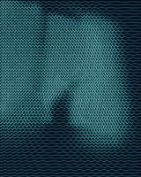
01frequencrreal-time frequency-modulation camera. neon oscilloscope lines from camera or photos.websoon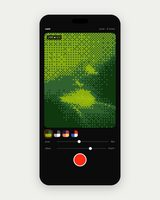
02rastrreal-time camera effect.camerasoon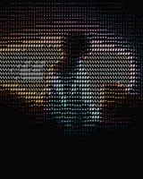
03glyphascii shader tool. webgl pipeline, 50+ character sets, edge detection, webcam, png / webm export.websoon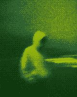
04phasrdithering and raster studio. 105 effects, 43 retro console renderers, layers, 16× export.websoon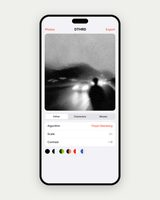
05dthrddithering app. 12 algorithms, 10 character sets, 11 palettes, grid mosaic.iossoon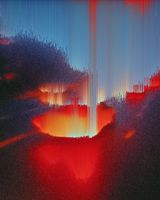
06iicsaimage effects studio. ascii, dither, halftone, vhs, pixel sort and more.websoon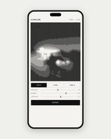
07scanlinevertical-line dithering from photos, video or live camera.websoon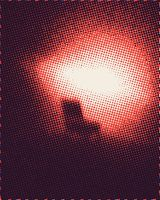
08tonehalftone overprint in 1–3 inks. riso / zine texture, am or grain screens.appsoon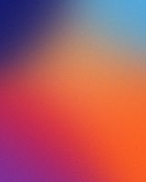
09gradrgradient generator. linear, radial, conic and mesh gradients, grain, wallpaper sizes.websoon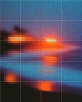
10uprescreative tiled upscaler. restores old photos with seedvr2 + flux.websoon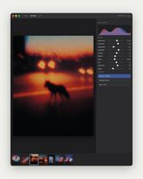
11mononative photo editor. raw development meets photoshop-style editing, on metal.macossoon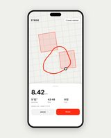
12striderunning app. gps tracking, training plans, territory claiming.mobile / websoon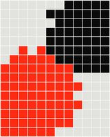
13conqurmobile game.mobilesoon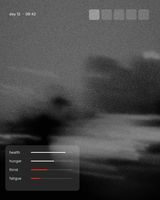
14minimal uiclean minimal interface overhaul for project zomboid, build 42.modsoon